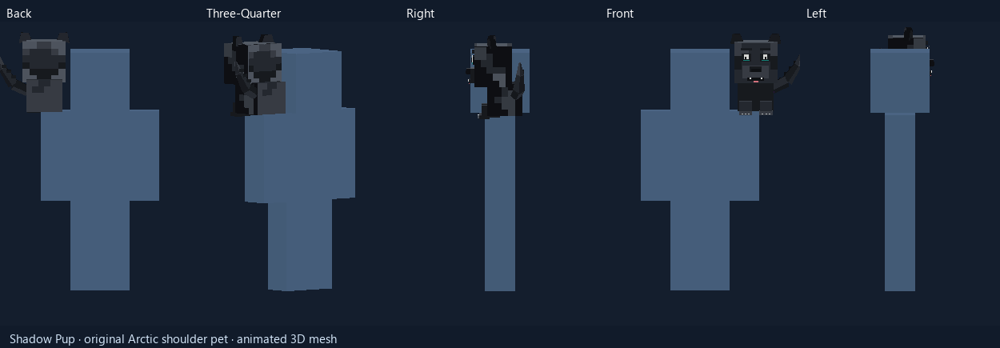
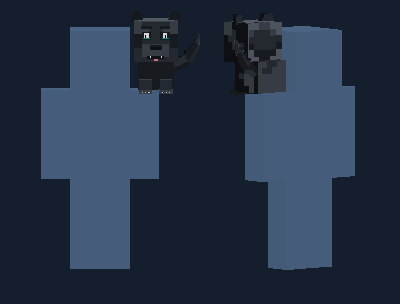
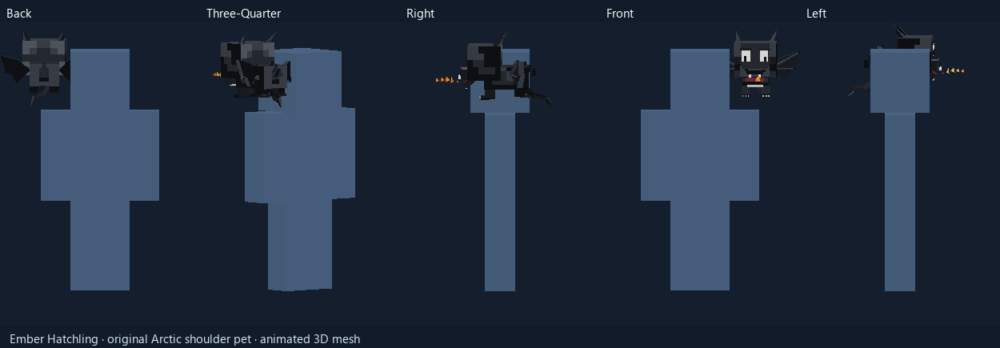
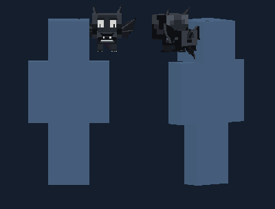
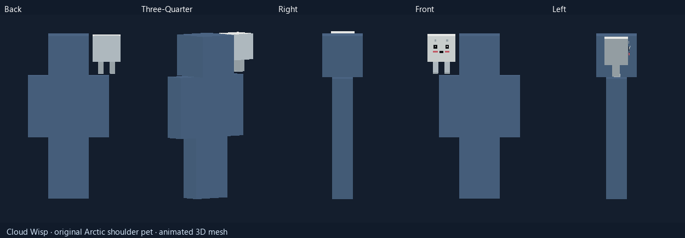
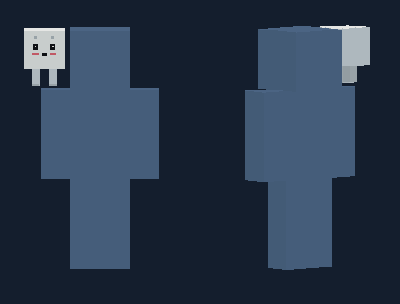

Shadow Pup
Seated companion
Low seated silhouette, dark fur, teal eye accents, tiny tongue, a raised wagging tail and a quick blink.
Watch idle motion

Ember Hatchling
Winged companion
Hovering black drake with folded dimensional wings. Its jaw opens for one short fire breath, then rests and blinks.
Watch idle motion

Cloud Wisp
Floating companion
Bright floating spirit with a readable face, rosy cheeks, short hanging legs and a quick blink.
Watch idle motion

The 3D models and five-angle views have been checked in the review renderer. Shoulder fit during walking, equipment overlap and multiplayer lighting still need an in-game check.